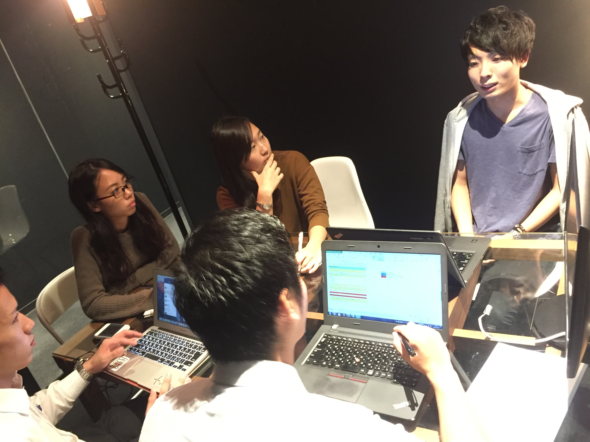

新年あけましておめでとうございます！ 大阪支店インターン生の奥村です！！
４人で活動していたこの企画ですが、第2回目にしてすでにカクちゃんこと角谷と、ドイちゃんこと土井が卒業したことで奥村と立松の二人となってしまいました！
でも安心してください。カクちゃんとドイちゃんはインターンこそ卒業したものの、この企画はお手伝いしてくれるので予定通り毎週配信していきますよ！！
早速ですが、今回突撃してきたのはLT大阪の若きリーダー高橋 悠人さんです！
LTの知将とも呼ばれる悠人さんにたっぷりとお話をお聞きして参りましたので、ぜひ最後までお読みいただければ幸いです！
では参りましょう。高橋 悠人さんです！
 高橋 悠人さん / Yuto Takahashi
高橋 悠人さん / Yuto Takahashi
2014年4月入社
立命館大学の理学部を卒業し
2014年4月よりレバレジーズに入社。
営業マンとして新卒の時点で早くも全事業部で上位の成績を残すなどの活躍をみせ、
2016年度始めよりLT大阪支店の立ち上げのためLT大阪リーダーへ
ー本日はよろしくお願いします。まずはゆうとさんのパーソナリティーをお伺いできればと思います。
ーゆうとさんてざっくっというとどんな人ですか？
よろしくお願いします。
そうですね。白黒つけたい派の人間で、その場でパッパッと決めて、どんどん次に進んで行きたい人ですね。
PDCAでいうとPからDへの移行スピードと、Dを行う数はめちゃくちゃ多い方だと思います。
性格は頑固な方で、一つのことを突き詰める性格です（笑）
ー思考速度で言えば悠人さん！とよく耳にしますが、そんな悠人さんはどんな少年時代を過ごしていましたか？。
小学生の頃はスポーツばかりで、テニス・バスケ・野球をやっていて高校ではバレーをしていました。
でも私はあまり運動神経が良くなかったんです（笑）
なので上手い人を観察して、どんな動きをしているのかとか、その人たちにどうしたら勝てるかをひたすら考えていましたね。
そういった意味で言うと、今の自分も昔の自分も共通項が多くて、何をするにしても頭を使うようなイメージですね。
ー仕事以外では普段どんなことをされているんですか？
本も読むんですが、意外かもしれませんがゲームと漫画好きなので、
休みの日は読書→ゲーム→マンガのローテーションで1日中を過ごしていますね（笑）
ちなみに最近で面白かった本は『USJのジェットコースターはなぜ後ろ向きに走ったのか? 』 森岡 毅著 です。
あとは思考力を鍛える系の本をよく読みます。
映画もよく観ていて、ジャンルは絞っているわけではないですが、心揺らされるハートフルな映画をめちゃくちゃ観ます。
お気に入りはレオンという1994年製作のフランス・アメリカ合作映画で、もう10回以上は観てます（笑）
自分で考えて行動する楽しさ

ー話は変わりますが、なぜベンチャーで、かつなぜレバを選んだんですか？
まず、そもそもベンチャーを中心にみていたのですが、
その理由はまず、2０代のうちに他の同年代の人たちよりも市場価値の高いビジネスパーソンになっておくには、
急成長しているベンチャー企業で働きたいって思いがあったのが一つです。
何故なら、20代のうちに、他の新卒の人たちから頭一つ抜けるためには、それなりの成長をしないといけない、
となると成長している会社で成長しているノウハウを身につける必要があると思って、
急成長している企業っていうのを一軸としてもっていました。
あと、業界ですが最初から人材をやりたいと思っていました。ですが、それも多角的な領域での人材です。
人材をやりたいと思ったきっかけが、自分が人に影響されやすい人間でして、
大学生のときに自分を変えてくれた人とか、自分に新しい気づきを与えてくれた人を思い返してみると、
その人たちってやっぱり他の人とは何かが違っていて、人への影響力がすごい人たちばっかりだったんですね。
そこで、私も人に何か影響を与えられるようになりたいという目標ができました。
じゃあ人に影響を与えられる人ってどんな人だろって考えた時、その人たちの共通点て、様々な経験していることだったんです。
その人たちは、1つの会社に縛られないような、今で言うベンチャー色の強い人たちです（笑）
多角的な領域での人材と言ったのは、その人たちに並べるような自分のキャリアを描いてみたときに、
例えば1つの領域で人材に特化してる業界で働いてしまうと、自分の将来のキャリアの幅が狭まってしまうリスクがある。
それってとても怖いことで、そういう理由があって、多角的な事業を展開していて、
かつ業績を伸ばしている会社の方が、キャリアに幅ができると思ったんです。
いわゆるリスクヘッジみたいなものです。
ちなみにですが、ほんとはリクルートも受けたかったんです（笑）
ただ、募集の時期にちょうど海外旅行に行っていて、その間にウェブテストの期限が終わってました（笑）大きなミス（笑）
もし間に合っていたらマネジメントソリューションズを受けたかったのですが、、、
でも結果だけ見ればレバで本当によかったと思っています。
青木さんにとって仕事のできる人とは
ー青木さんにとって仕事ができる人ってどんな人ですか？
また、青木さんが誰にも負けないポイントはなんだと思いますか？
高橋悠人さんが私のその例なのですが、仕事ができる人は、感情察知能力に長けている人だと思いますね。
例えば、その人の表情や話しているトーンなどから、
その人がどう言った心境でその話をしているのかをどれだけ深く感知できるか。
その能力がずば抜けてる人は本当に仕事ができると思います。
ですが感情察知能力は意図的に身につけられるものではないと思うので、こればかりは身につけようがないですね（笑）
あと、自分の負けないポイントは、人を模倣することです。それに尽きます。
もちろん自分の頭で考えることは大切ですが、新卒なのでまずは独自性をいきなり発揮するというより、
とりあえず仕事のできる人を模倣してそれを自分に落とし込んで再現性をもたせることが
最初は大事なんじゃないかなって思います。
なので、ある程度の能力に到達してから自分の独自性を持ってやって行くことが、
成長の最短ルートなんじゃないかなと思いますね。
だから今でも人の日報を読んだり、ログを見てどんな話をしていたかをチェックしたり、
モニタリングとかをするようにしています！最初は同期のモニタリングもしてましたね（笑）
やっぱり、事業部全体で共有されているようなナレッジって、氷山の一角的なもので、
言語化されてない感覚的なものであったりとか、
そういうノウハウは自分で見て聞いて自分で学ぶ必要があると思います。
好きなことをさせてくれた親への恩返しがしたい

ーそんな青木さんの今後の目標と人生の夢について教えてください！
直近の目標は、1年半以内で事業部の中でリーダーになることです。
なんで1年半かというと、それがメディカル事業部の新卒リーダーの最短記録だからです。
リーダーになりたい理由は単純で、今より一つ上の視点で事業を見てみることで自分の視野を広げたいからです。
だからまずはリーダーになりたい！
そして、人生の目標ですが、父親と母親に恩返しをすることですね。
父親と母親に幸せを届けたいです（笑）
私が今まで生きてきた24年間、両親は私がやりたいことに対していつも反対をせず、肯定して意見を聞いてくれました。
休学を決めたこともなにも言わずに認めてくれました。
それってすごく恵まれた環境で育ったと思っていて、すごく自由にさせてくれました。
自分にとってはとてもありがたいことで、本当に感謝しています。
ですので、まずはお母さんにはブランドものをあげます。ブランドものが好きなので（笑）
お父さんは旅行好きなので、旅行に連れて行ってあげたいですね。
ずっと自営業で家にいるから海外に連れて言ってあげたいなと。
ーすてきな夢ですね！では最後にインターン生に一言お願いします！
そうですね。同期を大切にしてください。
こういう質問をすると正直この返事が多くないですか？（笑）
最初私はいつも、うっさいねん！って思ってました（笑）
でもこの時期になって思うのが、同期がいてよかったなってことですね。
入社した頃、私はけっこうズケズケ言うタイプだったので、同期からは嫌われていました。
その時は同期に嫌われるくらいどうでもいいわ！っていう感じでした。
でもそれから2、3ヶ月経ってからですが一緒に仕事するようになり、
飲みに行ったり、悩みや納得いかないことがあった時に話を聞いてくれたり、
切磋琢磨して高め合ってくれるライバルになるのはいつも同期で、それでやっと気づいたんです。
本当に同期がいてよかったなって。
なので、私からもうるさいようですが、
同期を大切にしてください！！！（笑）
ー青木さん本日は本当にありがとうございました!
青木さんへのファンレター、コメントどしどしおまちしております！
またはインターンの私たちへのコメント等いただけるのでありましたら、メールに返信する形でいただければ嬉しく思います！！！
次回はなんと青木さんご指名の
LT事業部大阪リーダーのゆうとさんに突撃してまいります！！！
お楽しみに！！！